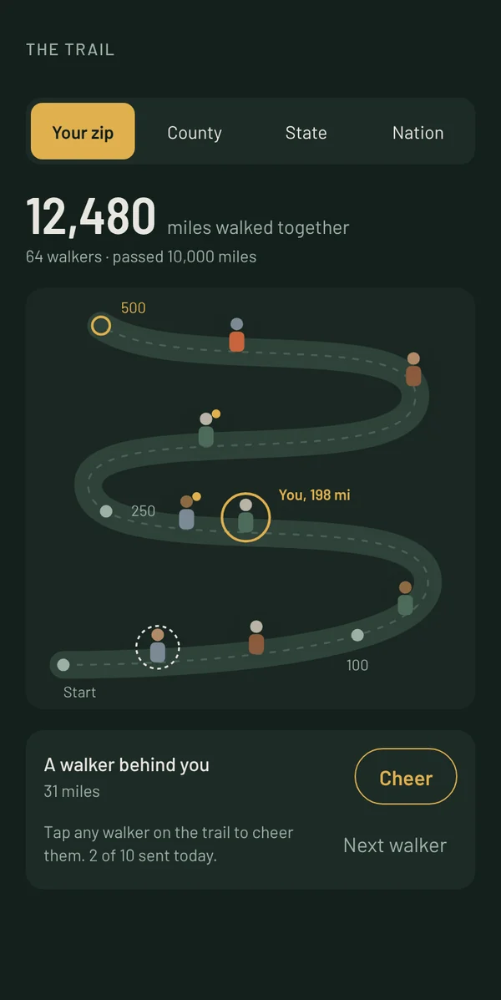
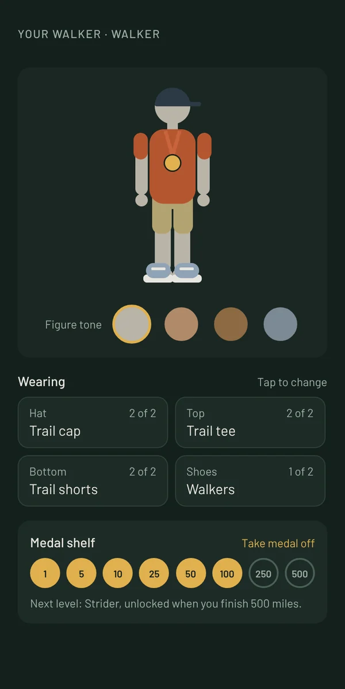

500 Mile WalkTrax
500 miles, at your own pace.
Walk a shared trail with people in your zip code. No streaks, no deadlines, and your miles never expire.
In testing now. Coming to iPhone.


The trail
Walk with your neighbors, without the scoreboard.
Everyone in your zip code is on the same trail, shown as an anonymous figure. There are no names and no rankings. You can see who is near you and send a cheer to anyone on the path.
The miles your area has walked together add up in one number at the top, so the bigger effort is always in view.

Your walker
A figure that shows how far you have come.
Pick a figure, dress it, and wear the medals you earn. Some gear is unlocked by miles alone, like trail boots at 100.
Medals arrive at these miles:
- 1
- 5
- 10
- 25
- 50
- 100
- 250
- 500
Built for people who are tired of being pushed.
Credit for the walking you have done
Miles you already walked this year count toward your first 500, up to 250 miles. Nobody starts at zero.
Any device that feeds Apple Health
Miles come from Apple Health, so an iPhone in your pocket, an Apple Watch, or a tracker that syncs to Apple Health all count.
Free to walk
Every mile, medal and level is free. Optional extras, such as seasonal outfit packs, will be offered in the app.
Anonymous on the trail
Other walkers never see your name. The app never asks for your location, only a zip code that you type in. Read the privacy policy.
Screens are from the test version of the app and show sample data. Features may change before release.